4．椭圆积分
约翰·伯努利在成功地用部分分式法积出某些有理函数后，在1702年的《教师学报》上断言，任何有理函数的积分无需包含除三角函数与对数函数以外的任何其他超越函数。因为有理函数的分母可以是x的一个n次多项式，所以约翰·伯努利的断言的正确性就依赖于能否将任何一个实系数多项式表示成实系数的一阶或二阶因子的乘积。莱布尼茨在1702年的《教师学报》上的文章中以
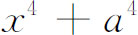
为例，认为这是不可能的。他指出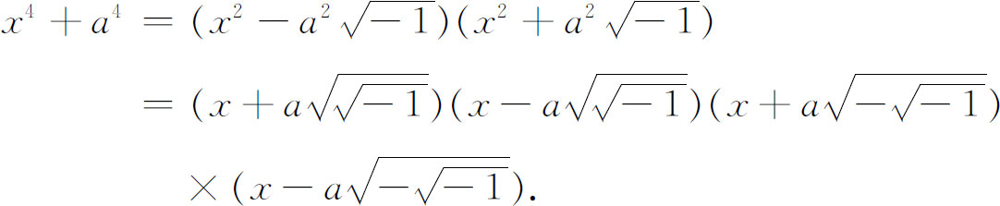
他又说：这四个因子中的任意两个的乘积都不能给出一个实系数的二次因子。假如他能将
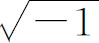
和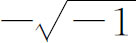
的平方根表示成通常的复数，他就会看出他的错误所在。尼古拉·伯努利（1687—1759）（詹姆斯·伯努利和约翰·伯努利的侄儿）在1719年的《教师学报》上指出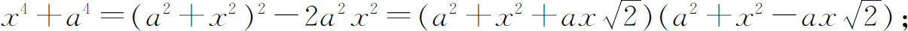
所以函数
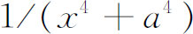
能用三角函数和对数函数求积分。人们也考虑了无理函数的积分。詹姆斯·伯努利和莱布尼茨在这方面曾通过信，因为他们经常遇到这种被积函数。1694年詹姆斯·伯努利关心弹性问题(21)，即受力细杆（例如在端点受力）所具有的形状问题。对一组端点条件，詹姆斯·伯努利发现曲线的方程由下式给出：
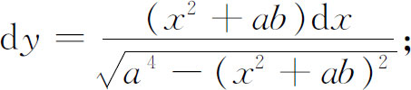
他不能用初等函数来求这个积分。联系到这项工作，他引入了双纽线，其直角坐标方程是
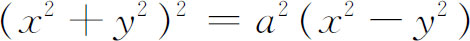
，其极坐标方程是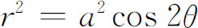
。詹姆斯·伯努利想求出其弧长。从双纽线的顶点到曲线上任一点的弧长由下式给出：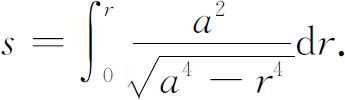
詹姆斯·伯努利猜测这也不能用初等函数积出来。在17世纪，企图求出椭圆的弧长（它对天文学是很重要的），就导致计算积分
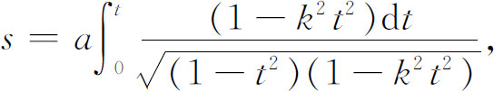
这里取椭圆方程为
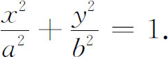
被积函数中
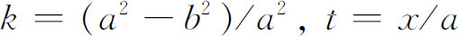
。求单摆的周期问题导致求积分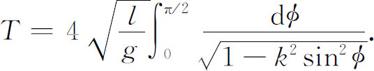
这种无理被积函数还在求双曲线、三角函数等曲线的弧长时出现。这些积分约在1700年就已经闻名了，还有其他包含这种被积函数的积分在整个18世纪中都经常出现。例如欧拉在他1744年关于变分法一书的附录里在有关弹性的权威性处理中得到
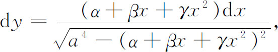
其中的常数对我们说来是无关紧要的。欧拉像他的前辈那样用级数的手段来得到物理的结果。
由上面那些例子所组成的一类积分叫椭圆积分，得名于求椭圆的弧长。18世纪的人们还不知道这个积分类，何况这种积分都不能用代数函数、圆函数、对数函数和指数函数积出来(22)。
关于椭圆积分的最初的研究不是大量地针对积分求值，而是针对着把更复杂的一些椭圆积分简化为在椭圆和双曲线求弧长中出现的那些积分。其方法的根据出自当时占统治地位的几何观点，即认为表示椭圆和双曲线弧长的那些积分似乎是最简单的。由于看出了微分方程
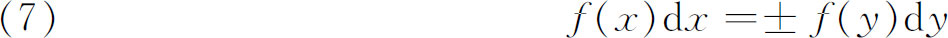
［这里
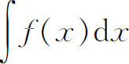
是一个对数函数或反三角函数］有一个积分解是x，y的代数函数，这就展现了一个新的观点，即尽管不能找到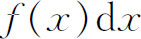
本身的代数的积分解，但却能找到两个这样的微分的和或差的代数积分解。约翰·伯努利提出了这样一个问题：除了对数和反三角函数的积分之外，其他的积分是否就不能保持这个性质了呢(23)？他在1698年发现了一个偶然得到的然而却是最漂亮的结果，那就是立方抛物线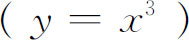
的二段弧的差是可积的。然后，他提出求一些高阶抛物线、椭圆和双曲线弧长的更一般的问题，其中曲线弧的和或差等于一个直线量，他还断言形如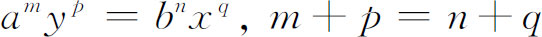
的抛物线就是这样的曲线，把它们相加或相减就等于一条直线。但是他没有给出证明。业余数学家法尼亚诺（Count Giulio Carlo de' Toschi di Fagnano，1682—1766）从1714年开始研究这个问题(24)．他考虑曲线
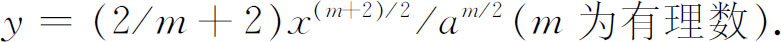
对这样的曲线倒不如直接去证明（图19．1）
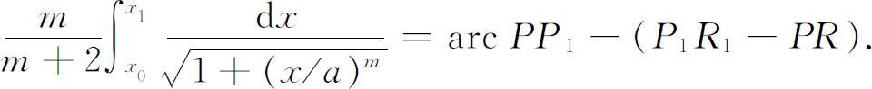
其中
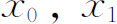
分别是P与P1的横坐标，PR和P1R1分别是P，P1点处曲线的切线。同样，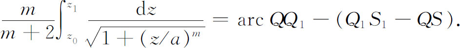
因此，如x和z之间有关系
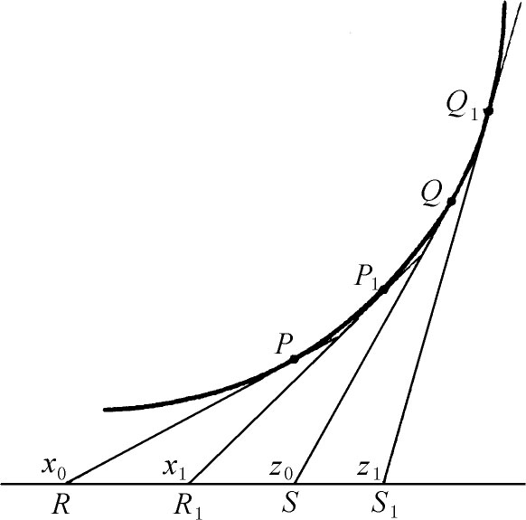
图19.1
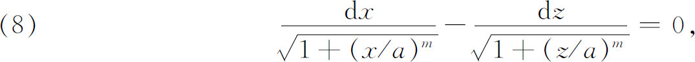
则两个定积分的差应为0，这就有
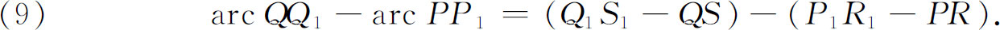
当m＝4时（8）的解是
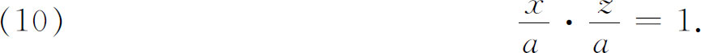
所以对m＝4，在曲线
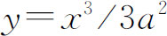
上，端点的横坐标值x，z满足（10）式的两段弧长之差可用直线段来表示。法尼亚诺还对（8）式在m＝6与m＝3的情形求出了积分。法尼亚诺进而证明了在椭圆上如同在抛物线上一样，可以找出无穷多段弧，它们的差可以用代数式表示，虽则单个弧是不能求长的。于是，在1716年他证明了任何两条椭圆弧的差是代数函数。他有解析式
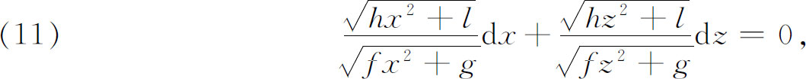
或更简洁地有
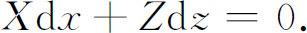
上面两式中h，l，f，g，x与z满足条件
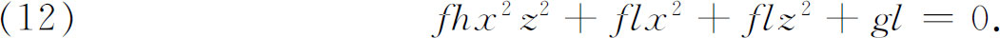
法尼亚诺证明了
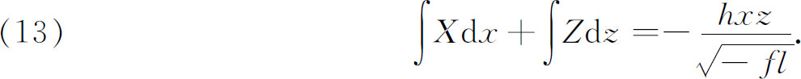
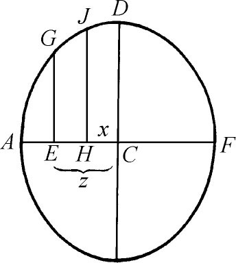
图19.2
上式的几何意义是：如果2a是椭圆的短轴FA的长（图19.2），
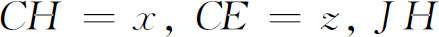
是H点的纵坐标，而GE是E处的纵坐标，则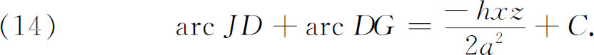
［为了使（14）式与积分一致，令p为椭圆的参数（正焦弦），令
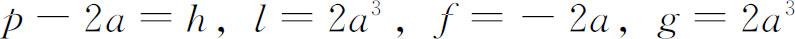
，则z为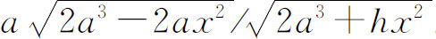
。］当x＝0，弧JD消失了，在（14）式中的代数项也消失了。由（12）式，z＝a，因而DG弧变为DA弧，它正是C的值。于是可以说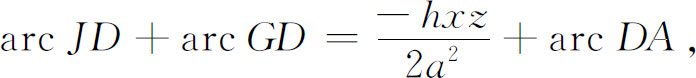
或
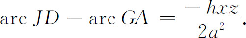
由此工作(25)出发的一个结果仍叫法尼亚诺定理，它是在1716年得到的，定理说的是：令
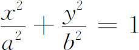
是以e为偏心率的椭圆，并令
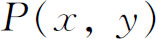
与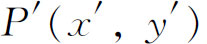
是椭圆上两点（图19.3），它们的离心角分别为 与
与 ，
， 与
与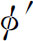
满足条件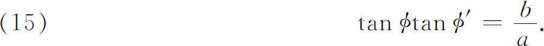
于是定理说
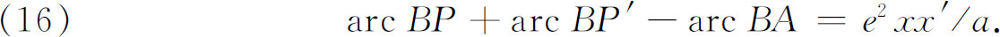
点P与P′可以重合［当满足（15）式时］，若记P与P′重合的这点为F（叫法尼亚诺点），他证明了
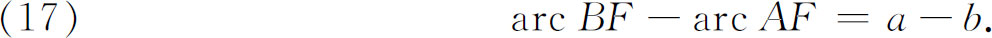
从1714年起法尼亚诺还致力于用椭圆和双曲线弧求双纽线弧长。
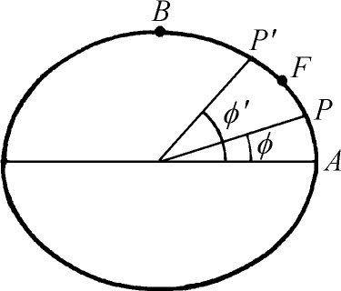 | 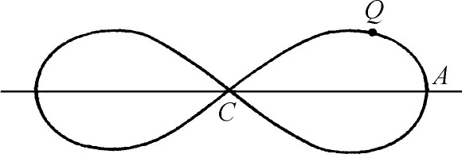 |
| 图19.3 | 图19.4 |
1717年和1720年，法尼亚诺求了其他微分组合的积分。例如他证明了微分方程
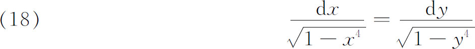
有积分
或
这个结果的一种说法是：表示双纽线（它的a＝1）弧长的两个积分之间存在一个代数关系，尽管其中每一个积分分开来看属于一类新的超越函数。
法尼亚诺然后进一步建立了许多类似的关系，以得到关于双纽线的特殊结果(26)。例如，他证明了若
则
或解出x，
法尼亚诺由这样的结果指出怎样在双纽线上找出其四分之一弧段的等分点；就是说，对某个n值，这些分点把图19.4中的弧CQA（双纽线的四分之一）n等分。他还指出，当给定一弧CS时，怎样去找CS的二等分点I。进而，他找出CQA上的点，使它们与C点的连线将CQA与水平轴CA之间的面积分成二、三、五部分；在给出了n等分此面积的弦后，他又找到了平分上述各部分的弦。
因此，法尼亚诺所做的已经超出了回答约翰·伯努利的问题，他证明了代表对数函数和反三角函数的积分所具有的那些值得注意的代数性质，至少也为某些类椭圆积分所具有。
约在1750年，欧拉注意了法尼亚诺在椭圆、双曲线和双纽线方面的工作，并开始了一系列他自己的研究。在《不可求长的曲线弧的比较之研究》(27)一文中，欧拉在重复了法尼亚诺的某些工作后指出，在已经将双纽线的四分之一部分的面积n等分后，怎样将它n＋1等分。然后，他指出，他自己和法尼亚诺的工作提供了积分的某些有用结果，对于方程（18），除了明显的积分（解）x＝y外，又加上特解
欧拉在他的文章《论解微分方程》(28)中以法尼亚诺的结果为自己的出发点。法尼亚诺对他所考虑的大部分微分方程所得的积分都是特解，它们是代数函数，然而通解却很可能是超越函数。欧拉决定寻找代数形式的通解，他从（18）出发而希望得到
的通解。这里m/n是有理数，而方程（24）表达了求弧长之比为m∶n的两段双纽线弧的问题。欧拉说，他通过尝试而相信，当m/n是有理数时，（24）有一个可以代数表达的通解。
从法尼亚诺的研究出发，可见特解（19）与（20）满足方程（18）。（18）两边的积分是双纽线上的一段弧长，此双纽线的半轴为1，横坐标为x。而解常微分方程（18）相当于求出两段等长的弧。欧拉指出了x＝y是（18）的另一特解。通解应该是这样的：指定其任意常数的值，就得到每一个这样的特解。由这些事实指引，欧拉求得（18）的通解是
或
其中c为任意常数。当然，给出了（25）式，就不难验证它是（18）式的通解。
在（25）式中隐含的正是通常所谓的这些简单椭圆积分的欧拉加法定理。直接求微商就可以得到
其中c是常数，显然它是（18）式的一个通解。因此，x，y与c之间必有关系（25）。于是，加法定理说，如果（27）式对其中的椭圆积分成立，则积分上限x是另外两个积分的任意选择的上限y与c的代数对称函数，即（26）。我们将看到，加法定理适用于更一般的积分。
利用结果（25）和（27），可以更直接地证明：若
则y是x的代数函数。这个结果叫做椭圆积分的欧拉乘法定理。由此，就导出方程（28）的通解，要点是它是关于x，y和任意常数c的一个代数方程。欧拉指出怎样能得出通解，但没有明显地给出。
在1756年至1757年的同一篇文章中，以及在同一杂志的卷7中(29)，欧拉着手处理了更一般的椭圆积分。他说他由尝试法得到了下面的结果。若微分
则可得下面形式的微分方程
其中X，Y是两个系数相同的四次多项式，它的四个系数可借助于一个任意常数，用（29）式的五个系数表示出来。因而（29）是（30）的通解，当（30）被指定为（18）时，（29）就变为（25）。欧拉指出，有趣的是即使的积分不能用圆函数或对数函数得到，但方程（30）仍被一个代数关系满足。他于是将结果推广到
其中X，Y是具有同系数的四阶多项式。在欧拉的《积分学原理》(30)中也有这个结果，在那里，欧拉用椭圆、双曲线和双纽线说明了结果的几何意义。
由这些结果，欧拉就能够进而得出现在称为第一类椭圆积分的加法定理。考虑椭圆积分
其中。于是加法定理说，方程
有一个关于x，y的确定的代数方程的解，使得其中的y能用x、相应的的值、任意常数x0和y0以及相应的和的值有理地表示出来。又当x取任意值x0时，y取事先规定的任意值y0。
这个结果容易导出另一个可能更有启发性的定理。如果两个形如
的椭圆积分之和或差等于第三个同样形式的椭圆积分，又如对三个积分根式中的系数及积分下限也全相同，则第三个积分的上限是另两积分的上限、公共的下限及在公共下限及两个上限处相应值的代数函数。
欧拉继续做下去。正如法尼亚诺对于两个双纽线弧长之差的处理把欧拉引向一般的第一类椭圆积分一样，法尼亚诺关于两个椭圆弧之差的处理（见公式［11］）把欧拉引到了第二类积分的一个加法定理(31)。他对于他的方法不能推广到开根次数高于二次或被开方式子高于四次的情况而表示遗憾。他还看出他工作中的一个重大缺陷，那就是他未曾用一般的分析方法得到他的代数的通解，因此他的结果没有自然地与微积分的其他部分联系起来。
在椭圆积分方面权威性的工作是由勒让德（Adrien-Marie Legendre，1752—1833）做出的。他是军事学校的教授，曾任多届政府委员，后来成了多科工艺学校的学监，直到1833年逝世，他一直保持热情而有规律的工作。他的名字长存于大量的各种各样的定理中，这是由于他解决了许多类型的问题。但是他的工作既无独创性也不像拉格朗日、拉普拉斯（Pierre-Simon de Laplace）和蒙日（Gaspard Monge）的那样深刻。勒让德的工作引起许多重要理论的产生，但这只是在他的工作被更强有力的思想接收后才实现的。勒让德恰恰名列于刚才提到的那三个同时代人物之后。
当1786年勒让德着手椭圆积分这个课题之际，欧拉的加法定理是椭圆积分理论的主要结果。40年内勒让德是仅有的一个在文献内加进有关椭圆积分的研究结果的人。关于这个课题，他贡献了两篇基本的文章(32)，然后写了《积分练习》（Exercices de calcul intégral，3 vols．，1811，1817，1826）、《椭圆函数研究》（Traité des fonctions elliptiques，2 vols．，1825—1826）(33)，与三篇说明阿贝尔（Niels Henrik Abel）与雅可比（Carl Gustav Jacob Jacobi）在1829年与1832年的工作的补充材料。像法尼亚诺的工作一样，欧拉的结果是与几何考虑联系在一起的，而勒让德则集中在分析方面。
勒让德在他的《研究》中，主要成果是证明了一般椭圆积分
［其中P（x）是x的任一有理函数，而R（x）是通常一般的四次多项式］能化为三种类型：
勒让德把上面三类积分称为第一、二、三型椭圆积分。
他还证明了经过进一步的变换这三个积分可化为以下三种形式：
其中n是一个常数。在这些形式中，易见从到的积分值与从到的积分值相同，积分顺序相反。的记号也是由勒让德引入的。
这些形式也可通过变数替换转化为雅可比形式：
量k叫做上面各椭圆积分的模。如果积分限是或x＝1，则称此积分是完全的，否则称为不完全的。
勒让德关于椭圆积分的工作是有许多功绩的。他从他的前辈的工作中引出许多先前没有的推断，并组织了数学课题；但他没有增加任何基本思想，也没有达到阿贝尔与雅可比（第27章第6节）的那种新的洞察力，后两位转化了这些椭圆积分，并从而构思了椭圆函数。勒让德的确十分谦逊地还可能有点辛酸地开始去认识阿贝尔和雅可比的工作，并赞扬他们。在以他1825年的著作的增补篇来阐述他们的新思想时，他清楚地认识到这个材料使他自己在这方面所做的一切黯然失色。他忽略了他所处的时代的一项最伟大的发现。